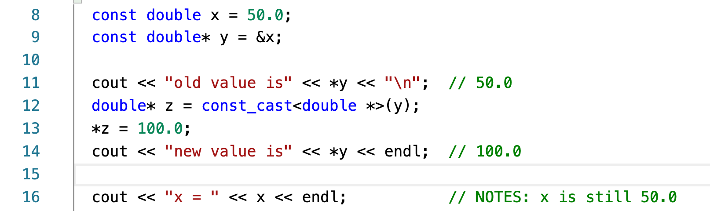

面经
这是面试题笔记系列的第一篇文章，记录一些常见的面试题。其中主要是一些一线互联网大厂的面试题，我主要收集于 LeetCode、CSDN、知乎、GitHub 等技术社区。
答案皆根据我的理解进行编写，可能会存在一定的错误。我将这些面试题主要分为三类：概念题、算法题、理解应用题。
面试题来源
腾讯 - 提前批 - 客户端开发 深信服 - 优招 - C++ 研发（物联网方向） 老虎 - 正式批 - Windows 开发一面 360 - 提前批 - 软件开发
理论概念题
-
函数传值的方式？ 按值传递、按引用传递、按指针传递。
-
引用和拷贝的区别？ 引用的::效率::要高于拷贝，这也是为什么如果函数参数是::类对象，通常使用引用传递。::若不想被改变，则加上
const为常引用。 -
引用的优缺点和拷贝的优缺点？ 拷贝需要大量原始数据的移动，带来时间和空间上的消耗，这是它的缺点。
C++11 所支持的::移动语义::（move semantics），其思想是避免原始数据的移动，而只是修改记录。move 的本质是一个转换函数，将给定类型转换为右值引用。
引用的缺点可以从引用与指针的区别的角度来看。如：构造时必须初始化、不能为 NULL、初始化后无法再改变、引用的创建和销毁不会调用类的拷贝构造函数和析构函数 等等。
- C++ 内存分区？未初始化的全局变量放在哪里？ ::C++ 内存分区：:: 堆、栈、自由存储区、全局/静态存储区、常量存储区。
关于自由存储区（Free Store）和堆（Heap） malloc/new

::文本段::：程序的二进制代码，只读。
初始化数据段：global/static/const/extern初始化的变量。
未初始化数据段：未初始化的变量。
初始化数据段和未初始化数据段统称为::数据段::。
::堆::：当使用 malloc 在堆上分配的内存。
::栈::：局部变量、函数返回所需的一些东西。
- 野指针是什么？有什么可以检测吗？
- 声明指针但是没有初始化⚠️。
- 释放空间后没有置 NULL，产生悬挂指针，存在安全隐患⚠️。
- 当返回一个基于栈分配的局部变量的地址时，num 是一个局部变量，函数结束后自动释放其空间，编译器会给出警告⚠️。
如何检测野指针？方法是提高野指针的崩溃率，将访问时的随机崩溃变成访问必然崩溃，尽早的定位到野指针。macOS 下 Xcode 提供了内存涂鸦（Malloc Scrobble）。
Linux 下有一个工具可以解决常见的 C++ 内存问题——「Valgrind 」，其中的 memcheck 工具提供：检查程序中的内存问题，如泄漏、越界、非法指针等。
- 进程间通信方式，知道互斥锁和自旋锁吗？
- 管道（Pipe）
| >：简单，阻塞，半双工通信。 - 消息队列 发送数据块，数据块有长度限制，数据拷贝消耗大。
- 共享内存 解决消息队列的数据拷贝产生的性能消耗。两个拥有独立的虚拟内存空间，但是映射到相同的物理内存中。
- 信号量 Semaphore。记录型信号量（阻塞队列）；互斥信号量。信号量实现进程的互斥和同步。经典的生产者消费者问题。
- Socket 程序进行 Socket 通信。
自旋锁🔒 指当一个线程在获取锁时，此时的锁已经被其他线程获取，那么该线程循环等待，然后不断判断是否能够被成功获取，知道获取到锁才会退出循环。 核心：线程反复检查锁变量是否可用，忙等待。
while (test_and_set(lock) == 1);
缺点：消耗 CPU、“饥饿”现象 优点：线程不会进入阻塞状态、减少了不必要的上下文切换。
互斥锁🔒：防止两条线程::同时::对同一临界资源进行读写的机制。类似互斥信号量机制提供的阻塞队列，实现让权等待。
- 路由器（R）和二层交换机（S）的区别？ 交换机，严格定义：以太网交换机。
- 工作层不同：R - 网络层，S - 数据链路层
- 转发机制： R - IP addr，S - MAC addr
- 主要功能： R - 隔离广播域，S - 不能 R - 用于连接不同网络，S - 组建局域网 R - 防火墙，配置复杂 交换机能干的事情，路由器也都可以。
- ARP 协议的功能干嘛用的？ ARP：Address Resolution Protocol 地址解析协议。 所谓的地址解析，就是主机在发送帧前将目标 IP 地址转换成目标 MAC 地址的过程。ARP 请求就是：根据目的主机的 IP 地址，获得其 MAC 地址。
终端 PING 一个 IP 地址，使用 WireShark 关键字 arp 过滤，可以看到 ARP 请求。
- C 和 C++ 的区别？
::C++:: 融合了 3 种不同的编程方式：C 语言代表的过程性语言、C++ 在 C 语言基础上添加的类代表的面向对象语言、C++ 模板支持的泛型编程。
首先，C 语言编程原理：其理念是将大型程序分解成小型、便于管理的任务，是一种自顶向下的设计。结构化编程技术反映了::过程性编程的思想::，根据执行的操作来构思一个程序。即：数据 + 算法 = 程序。
其次，面向对象编程：OOP（Object-Oriented Programming）强调的是数据。在 C++ 中，类是一种规范，它描述了这种新型的数据格式，对象是根据这种规范构造的特定数据结构。OOP 程序设计方法首先设计类，它准确的表示了程序要处理的东西，并不仅仅是将数据和方法合并为类的定义，OOP 还有助于构建可重用代码。
OOP 特性：抽象、封装和数据隐藏、多态、继承、代码的可重用性。
最后，C++ 和范型编程：范型编程（Generic Programming）。C++ 有多种数据类型 —— 整数、浮点数、字符、字符串、用户定义的、由多种类型组成的复合结构。例如，要对不同类型的数据进行排序，通常必须为每种类型创建一个排序函数。泛型编程可以只编写一个泛型（即不是特定类型的）函数，并将其用于各种实际类型。C++ 模板（Template）提供了完成这种任务的机制。
- 你对多态的理解？ 多态（Polymorphism）是 OOP 编程的一个重要思想在面向对象语言中，::一个接口，多种方法::即为多态。
C++ 的多态分为两种，静态多态和动态多态。
静态多态是通过函数重载实现的，在编译过程完成后就知道了应该调用哪个函数。
动态多态即运行时的多态性，通过虚函数（virtual）来实现的。虚函数允许子类重新定义成员函数，而子类重新定义父类的做法称为覆盖(Override)，或者称为重写。
多态最常见的用法就是声明基类类型的指针，利用该指针指向任意一个子类对象，调用相应的虚函数，可以根据指向的子类的不同而实现不同的方法。
- 讲一下 tcp 的拥塞控制？ TCP 的拥塞控制主要来避免两种现象，即::包丢失::和::超时重传::。一旦出现了这些现象就说明，发送的速度太快了，要慢一些。
一条 TCP 连接开始，cwnd 设置为一个报文段，一次只能发送一个；当收到这一个确认的时候，cwnd 加一，于是一次能够发送两个；当这两个的确认到来的时候，每个确认 cwnd 加一，两个确认 cwnd 加二，于是一次能够发送四个；当这四个的确认到来的时候，每个确认 cwnd 加一，四个确认 cwnd 加四，于是一次能够发送八个。可以看出这是指数性的增长。
涨到什么时候是个头呢？有一个值叫做门限（ssthresh）为 65535 个字节，当超过这个值的时候，就要小心一点了，就不能增长那么快了。
于是，每收到一个确认后，cwnd 增加 1/cwnd，我们接着上面的过程来，一次发送八个，当八个确认到来的时候，每个确认增加 1/8，八个确认一共 cwnd 增加 1，于是一次能够发送九个，变成了线性增长。
但是线性增长还是增长，还是越来越多，直到发送拥塞。拥塞的一种表现形式是丢包，需要超时重传。
有一种方式是，将 sshresh 设为 cwnd/2，将 cwnd 设为 1，重新开始慢启动。。但是这种方式太激进了，将一个高速的传输速度一下子停了下来，会造成网络卡顿。
快速重传算法。当接收端发现丢了一个中间包的时候，发送三次前一个包的 ACK，于是发送端就会快速的重传，不必等待超时再重传。TCP 认为这种情况不严重，因为大部分没丢，只丢了一小部分，cwnd 减半为 cwnd/2，然后 sshthresh = cwnd，呈线性增长。
TCP BBR 拥塞算法，它占满带宽，但是不占满缓存，时延较低。
- 左值引用和右值引用的区别？
- 左值存放在对象中，有持久的状态；
- 右值要么是字面常量，要么是在表达式求值过程中创建的临时对象，没有持久的状态。
- 右值引用的对象，是临时的，即将被销毁；
如果我们将一个对象的内存空间绑定到另一个变量上，那么这个变量就是左值引用。在建立引用的时候，我们是「将内存空间绑定」，因此我们使用的是一个对象在内存中的位置，这是一个::左值::。
const int& qux = 42; // OK: 42 是右值，但是编译器可以为它开辟一块内存空间，绑定在 qux 上
右值引用也是引用，但是它只能且必须绑定在右值上。右值引用应用在::语义移动::上，语义移动避免了数据的再拷贝带来的花销，提供一种数据的所有权的转交。
- 四种 cast 强制类型转换的区别和使用？
- static_cast：普通的类型转换
static_cast<type-name>(value);
不提供运行时的检查，要在编写程序时确认转换的安装性。 （1）把::子类::对象的指针_引用转换为::父类::指针_引用（上行安全），这种转换是安全的。若把父类对象的指针_引用转换成子类指针_引用（下行不安全），这种转换是不安全的，需要编写程序时来确认。 （2）基本的数据类型转换。安全由程序编写人员保证。
- dynamic_cast：用于处理多态
dynamic_cast<type-name>(expression);
指针转换失败，则返回空指针，若引用转换失败，则抛出异常。
把父类对象的指针_引用转换成子类指针_引用，即基类转换为派生类时使用 dynamic_cast。
- const_cast：用于移除类型的 const、volatile 属性。
const_cast<type-name>(expression);
常量指针被转换成非常量指针，并且仍然指向原来的对象；常量引用被转换成非常量引用，并且仍然引用原来的对象。

说明：使得 *pb 成为一个可用于修改 bar 对象值的指针，它删除 const 标签。
- reinterpret_cast
reinterpret_cast<type-name>(expression);
可以转换任何类型的指针，不安全。不改变括号中运算对象的值，而是对该对象从位模式上进行重新解释。
- 讲一下智能指针？
-
auto_ptr auto_ptr 会导致所有权的转移，于此同时，原指针不再指向有效数据（后续再访问会出现错误）。
-
unique_ptr unique_ptr 是 auto_ptr 的升级，策略更加的严格。unique_ptr 同样采取建立所有权（ownership）的概念，对于特定对象，只能有一个智能指针可拥有它，只有拥有对象的智能指针的构造函数会删除该对象。
编译阶段即可发现错误， unique_ptr 相比 auto_ptr 有更加安全的机制 。move 函数可以移交所有权。
-
share_ptr shared_ptr 采用引用计数（reference counting）的策略。赋值时，计数加一，指针过期时，计数减一。仅当最后一个指针过期时，才调用 delete 。
-
weak_ptr weak_ptr 可以维持一种弱引用。 对象被析构了，weak_ptr 会自动等于 nullptr。 weak_ptr 可以还原成 shared_ptr 而不会让引用计数错乱。
自己动手实现智能指针：
- 模版化（Template）
- 运算符重载（operator）【* 解引用】 ｜ 【-> 指向对象成员】 ｜ 【bool 用在布尔表达式】
- 拷贝构造和赋值：拷贝时转移指针所有权（舍弃 auto_ptr，选择 unique_ptr）
- 引用计数
- 了解完美转发吗？ 一个函数某一组参数原封不动地传递给另一个函数。这里不仅需要参数的值不变，而且需要参数的类型属性（左值/右值）保持不变，这叫做 Perfect Forwarding（完美转发）。
C++11 开始，完美转发由 std::forward 函数实现。底层实现和引用reference 密切相关：remove_reference 、右值引用、引用聚合。
- future 和 thread 了解吗？ 与并发（Concurrency）编程相关，future 是一个更高的抽象，同样的结构，代码将大大简化，变量减少到只有一个未来量。
调用 async 可以获得一个未来量。在未来量上调用 get 成员函数可以获得结果。
- tcp/ip 四层模型和 osi 七层模型具体是哪些？

- 进程和线程的区别？ 操作系统的设计，因此可以归结为三点： （1）以多进程形式，允许多个任务同时运行； （2）以多线程形式，允许单个任务分成不同的部分运行； （3）提供协调机制，一方面防止进程之间和线程之间产生冲突，另一方面允许进程之间和线程之间共享资源。
a.::地址空间和其它资源::：进程间拥有独立内存，进程是资源分配的基本单位；线程隶属于某一进程，且同一进程的各线程间共享内存（资源），线程是cpu调度的基本单位。
b.::通信::：进程间相互独立，通信困难，常用的方法有：管道，信号，套接字，共享内存，消息队列等；线程间可以直接读写进程数据段（如全局变量）来进行通信——需要进程同步和互斥手段的辅助，以保证数据的一致性。
c.::调度和切换::：线程上下文切换比进程上下文切换要快。进程间切换要保存上下文，加载另一个进程；而线程则共享了进程的上下文环境，切换更快。
算法题
-
KMP 算法？ KMP 算法和核心在于求解模式串的 next 数组，使得模式串与主串在匹配过程中出现失配情况时，大大降低没有必要的回退。
-
知道二叉树有哪些遍历的方式吗？ 先序_中序_后序_层序遍历。非递归：先序_中序/后序需要使用栈（Stack）辅助，层序遍历需要使用队列（Queue）辅助。
后序遍历难点较高！
 线索后遍历（线性结构），但是改变了树的指针结构。
线索后遍历（线性结构），但是改变了树的指针结构。
-
快速排序的思想？ 快速排序是一种基于分治法的重要的排序算法，归并排序也是基于分治技术。快速排序的核心在于切分（Partition）操作。根据切分的不同，可以分为普通快排（单路切分）、双路快排（双路切分）、三路快排（大于、等于、小于三路）。

-
冒泡排序

-
手撕 strcpy？ 注：如果 dest 事先未分配足够的一片连续空间，则
dest++可能会覆盖其他的数据。
理解应用题
- 一个结构体，能够用 memcpy 判断两个结构体存的东西是不一样的吗？ 所以，我不知道能不能？但是可以了解一下 memset 和 memcpy 函数。在对结构体变量都使用 memset 初始化的前提下，使用 memcmp 函数进行一个一个字节的比较，相同则返回 0。
memset 按字节赋值，对每个字节赋值同样的值。0 的二进制代码为全 0，-1 的二进制补码全为 1。所以一般赋初值要赋为 0 或 -1。如果对一个整型赋值为 1，int 占 4 个字节，最后结果为十进制的 16843009。
0000 0001|0000 0001|0000 0001|0000 0001
int a;
memset(&a, 1, sizeof(a)); // a is 16843009
如果有结构体成员有指针的情况，则还要再考虑，就如同深拷贝的浅拷贝问题。
memcpy sizeof(char) 等于 1，逐个字节的拷贝。
- 知道哈希表吗？怎么解决冲突？如果只有 32 个槽，怎么存放几千个数据？
hashtable，将关键字 K，通过散列函数 F(K) 映射到表中一个位置上。设计优秀的哈希函数，哈希表可以实现接近于 O(1) 的查询速度。当 F(K1) == F(K2) 时，称为冲突。
解决 Hash 冲突的方法有：线性探测法、二次探出法、开链法、再散列法。
如果只有 30 个槽，说明存在大量的冲突，平均每个槽会产生上百的冲突，此时第一级的哈希函数已经没有多大的优化的空间了，要么进行再 hash。我觉得采用开链法也是可取的，可以在每个槽后接上树结构冲突发生时，往树中添加即可，采用树结构可以保证查询的时间复杂度为 O(logn)。
-
用过 shell 脚本吗？ 用过一点点，基于 Github Page 搭建了个人博客，本地编写博客后，执行一个脚本，自动提交和部署到原厂仓库。有一定的脚本语言基础：Python、Lua。
-
学习了哪些数据结构？ ::线性数据结构:: 动态数组：Vector 扩容/缩容 链表（LinkedList）：头节点、尾指针、循环链表 栈（Stack）：链表栈、动态数组栈 队列（Queue）：链表队列、动态数组队列、循环队列
::树结构:: 堆（Heap）：优先队列，最大/最小堆 二分搜索树（BST） 平衡二叉树（AVL） 红黑树（RB-Tree） B 树和 B+ 树（B-Tree） 字典树（Trie）
::图结构:: 图的表示：邻接矩阵、邻接表。
::其他数据结构:: 并查集（Union Find） 哈希表（Hash-table） 集合（Set）：HashSet、TreeSet 映射（Map）：HashMap、TreeMap
- 你对 mfc 的印象？ 微软基础类库（Microsoft Foundation Classes，简称 MFC）。 MFC 可以用面向对象的方法来调用 Windows API，以及能够更加敏捷的开发应用程序。
MFC 出现的时间比较早（1992），而 C++ 的第一个标准是 1998 年（C++98）。C++ 的发展比 MFC 更加迅猛发展，结果 MFC 的一些好的东西就成了它的陋习。
身边也没有同学学过 MFC。我对桌面程序开发有过一点点的经验，我采用的方案的 C++ 和 Qt，做的是一个可视化的排序的窗口。
-
用过哪些 UI 界面？ 图形化方面了解一点点的 Qt 和 OpenCV。但是时间比较早了，大三的时候。
-
用过 qt 吗？ 排序算法的可视化，采用的是 C++ 和 Qt：QPainter、自动重绘函数。
-
如何判断大小端，手写代码？ 在 Socket 网络编程时，会涉及到大端序和小端序的转换。
- 大端序（Big Endian）：高位在前，低位在后。这是人类读写数值的方式。
- 小端序（Little Endian）：地位字节在前，高位字节在后。
计算机正常的内存增长方式是从低到高（栈不是），取数据方式是从基地址根据偏移找到它们的位置。小端序第一个字节是它的低位，符号位在最后一位，在做运算时，从地位开始，最终刷新符号位，运算较为高效。
大端序第一个字节就是高位，很容易知道它是正数还是负数，对于数值判断会很迅速。除了计算机内部处理，其他场合几乎都是大端序，比如网络传输和文件存储。
- 做了哪些面向对象编程的工作？
- 大学对课程设计
- 动手实现 C++ STL 的部分容器类，遵循 OOP 思想，类的设计，方法接口设计。
参考
-
What is the difference between new_delete and malloc_free? - Stack Overflow https://stackoverflow.com/questions/240212/what-is-the-difference-between-new-delete-and-malloc-free
-
二分搜索树（BST）的前_中_后序遍历-递归+非递归 - 蓝本本 https://zhuanlan.zhihu.com/p/100926726
-
十大排序算法 - 蓝本本 https://zhuanlan.zhihu.com/p/100435276